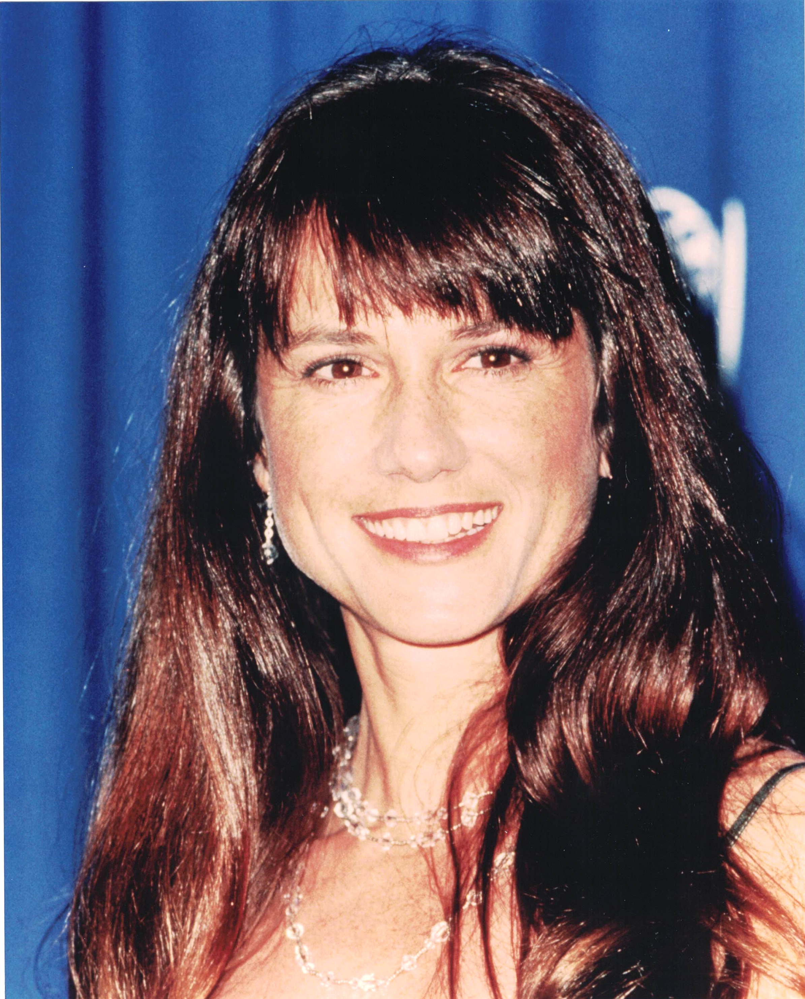

Product No. HEC-0077
$12.99
Shipping: $8.95
Description
8x10 color photograph
Full Description
Holly Hunter is an American actress known for her distinctive voice, intense screen presence, and acclaimed performances in both comedy and drama. Born March 20, 1958, in Conyers, Georgia, she studied drama before beginning her professional career in theater and film. Hunter gained widespread attention with the Coen brothers' comedy "Raising Arizona" (1987), starring opposite Nicolas Cage. She played Edwina "Ed" McDunnough, a police officer who becomes involved in a wildly comic kidnapping scheme. The film became a cult favorite and helped establish Hunter as a major screen actress. She went on to earn critical acclaim for films including "Broadcast News," "The Piano," "The Firm," "Home for the Holidays," "Crash," and "Thirteen." Her performance as Ada McGrath in "The Piano" (1993) won her the Academy Award for Best Actress. Hunter also became familiar to family audiences as the voice of Helen Parr, also known as Elastigirl, in Pixar's "The Incredibles" and "Incredibles 2." Her television work has included the drama series "Saving Grace," as well as numerous television films and guest appearances. Over her career, Hunter has received Academy Award, Emmy Award, Golden Globe, and other major acting honors. With memorable roles in "Raising Arizona," "Broadcast News," "The Piano," and "The Incredibles," Holly Hunter remains one of the most respected actresses of her generation and a popular name among collectors of film and television autographs and memorabilia.
Condition
Excellent condition